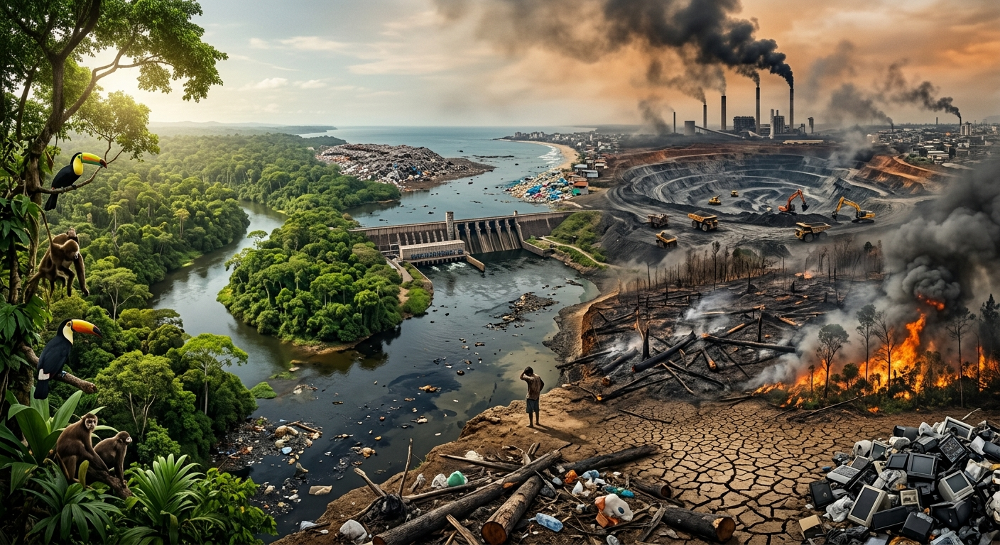

Meu primeiro post
sejam bem vindos a o blog sobre os impactos ambientais, este blog servira para mostrar e provar que se nós não respeitarmos a natureza teremos consequencias enormes
por Yan Vinicius
venha conhecer como preservar a natureza e como isso pode afetala.

sejam bem vindos a o blog sobre os impactos ambientais, este blog servira para mostrar e provar que se nós não respeitarmos a natureza teremos consequencias enormes
por Yan Vinicius